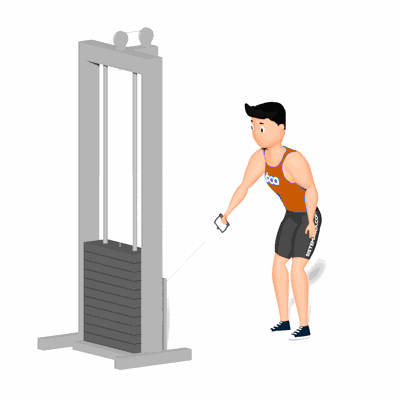

Remada Unilateral Cross Over

Exercício com enfoque para hipertrofia e fortalecimento dos músculos dorsais. Na execução, estimula também os músculos auxiliares, tais como, os bíceps e trapézio.
Ficha Técnica
Tipo: Musculação
Grupo Muscular: Costas
Aparelho: Nenhum
Músculos: Nenhum
Como realizar
- Na posição em pé, pernas afastadas, joelhos semiflexionados;
- Pegue o pegador com a pegada neutra;
- Coluna alinhada, incline o troco para frente e mova o quadril para trás;
- Utilize o outra mão para apoiar no aparelho e conceder melhor estabilidade para execução;
- Puxe o peso até a altura dos peitorais flexionando os cotovelos ao lado do corpo;
- Segure a contração por um instante e retorne à posição inicial, repita os movimentos.
 RC STORE
RC STORE